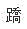

A.脾失健运
B.肝失疏泄
C.肾气不足
D.湿浊中阻
E.胆汁外溢
参考答案：C
A.腹大如鼓
B.四肢枯黄
C.皮色苍黄
D.胁下或腹部痞块
E.下肢水肿
参考答案：B
A.头重如裹
B.头痛如裂
C.头痛而空
D.头痛而晕
E.头痛昏蒙
参考答案：A
A.眩晕，头重如裹
B.眩晕，头重如蒙
C.眩晕，耳鸣，头痛且胀
D.眩晕，动则加剧
E.眩晕，耳鸣，有空虚感
A.风
B.寒
C.湿
D.热
E.燥
参考答案：E
A.消渴方
B.玉女煎
C.沙参麦冬饮
D.六味地黄丸
E.肾气丸
B.湿
C.寒
E.暑
A.君相火旺型失眠
B.阴虚火旺型心悸
C.肝肾阴虚型眩晕
D.阴虚火旺型遗精
E.肝肾阴虚型健忘
参考答案：D
A.补中益气丸
B.理中丸
C.左归丸
D.金匮肾气丸
E.六味地黄丸
A.理气健脾，镇心涤痰
B.育阴潜阳，镇心安神
C.理气解郁，化痰醒神
D.理气解郁，逐痰安神
E.理气解郁，化瘀安神
A.肾阳虚衰
B.筋脉失于濡养
C.肺失输布通调
D.脾运不健，湿困中焦
E.邪阻经络，气血运行不畅
A.产后乳少，甚或全无
B.乳房柔软，无胀痛感
C.胸胁胀痛，纳差
D.乳汁浓稠
E.舌苔薄黄，脉弦数
A.脾运失健
B.脾气虚弱
C.脾胃虚寒
D.乳食内积，损伤脾胃
E.湿邪困脾，运化失司
A.风寒
B.伤风
C.伤寒
D.风热
E.时行感冒
A.以寒热为纲
B.以气血阴阳为纲
C.以虚实为纲
D.以寒热虚实为纲
E.以脏腑虚实为纲
A.桑菊饮
B.桑杏汤
C.银翘散
D.杏苏散
E.养阴清肺汤
A.鼻翼煽动
B.呼吸困难
C.张口抬肩
D.不能平卧
E.呼多吸少
A.心血瘀阻
B.心血不足
C.阴虚火旺
D.心阳不振
E.痰饮凝心
A.血府逐瘀汤
B.左归饮
C.右归饮
D.补阳还五汤
E.八珍汤
A.肝
B.心
C.脾
D.肺
E.肾
A.肝、肾、脾
B.心、肝、脾
C.心、肝、肾
D.肺、肝、肾
E.肺、脾、心
A.理气消胀
B.消食导滞
C.理气和胃
D.消食健脾
E.和胃止呕
A.益气通便
B.养血润肠
C.顺气导滞
D.健脾升阳
E.温阳通便
A.化湿护阳
B.扶正固本
C.清热护阴
D.清热利湿
E.清热养胃
A.肝郁
B.湿热
C.血瘀
D.肝阴不足
E.肝阳上亢
A.初期使用
B.末期使用
C.治疗的唯一方法
D.自始至终使用
E.正虚邪实时使用
A.风邪
B.寒邪
C.热邪
D.湿邪
E.暑邪
A.头后部及两侧
B.枕后及项部
C.前额及眉棱处
D.头两侧及耳部
E.巅顶或连于目系
A.肺、脾、肾
B.心、肝、肾
C.肝、脾、肾
D.肺、胃、肾
E.心、脾、肾
A.虚
B.火
C.积滞
D.风、痰
E.气、血
A.麻黄汤
B.五苓散
C.越婢加术汤
D.疏凿饮子
E.实脾饮
A.身痛逐瘀汤
B.补中益气汤
C.血府逐瘀汤
D.膈下逐瘀汤
E.少腹逐瘀汤
A.多食而瘦
B.渴而多饮
C.尿有甜味
D.尿多而混浊如膏
E.口渴喜饮
A.清热通络，疏风祛湿
B.清热解毒，养阴除痹
C.清热化湿，凉血除痹
D.祛风化湿，通络除痹
E.温经散寒，祛风除湿
A.湿热下注，热扰精室
B.肾虚滑脱，精关不固
C.劳伤心脾，气不摄精
D.君相火动，心肾不交
E.脾肾两虚，精关不固
A.小蓟饮子
B.知柏地黄丸
C.导赤散
D.茜根散
E.二至丸
A.安宫牛黄丸
B.当归芦荟丸
C.生铁落饮
D.礞石滚痰丸
E.逍遥丸
A.手阳明大肠经
B.手少阴心经
C.手太阳小肠经
D.足厥阴肝经
E.足阳明胃经
A.手、足阳明经
B.手、足太阴经
C.手、足太阳经
D.手、足少阴经
E.手、足少阳经
A.印堂穴
B.神庭穴
C.大椎穴
D.百会穴
E.关元穴
A.别络
B.经别
C.奇经
D.经筋
E.手少阴心经
A.手太阴→手阳明→足阳明→
B.足阳明→足少阳→足厥阴→
C.手厥阴→手少阳→足少阳→
D.足少阳→足厥阴→手太阴→
E.足太阴→手少阴→手太阳→
A.经别
B.别络
D.督脉
E.浮络
A.冲脉、督脉
B.任脉、带脉
C.阳、阴
D.阴维、阳维
E.冲脉、任脉
A.足太阴脾经
B.足厥阴肝经
C.足少阴肾经
D.足阳明胃经
E.手太阴肺经
A.冲脉
B.督脉
C.阴脉
D.阳维脉
E.阴维脉
A.带脉
B.冲脉
C.任脉
E.阴脉
A.阴维脉、阳维脉
B.阳脉、阴脉
C.督脉
D.带脉
E.任脉
A.目内眦
B.口唇
C.目眶下
D.胞宫
E.会阴
A.正经
B.奇经
C.经别
D.浮络
E.别络
A.360个
B.361个
C.362个
D.364个
E.365个
A.12个
B.8个
C.16个
D.15个
E.32个
A.耳后两乳突之间
B.腋前、后纹头至肘横纹（平肘尖）
C.胸骨上窝至胸剑联合中点
D.前两额发角之间
E.歧骨至脐中
A.手指同身寸
B.中指同身寸
C.拇指同身寸
D.横指同身寸
E.以上都不是
A.活动标志取穴法
B.肌性标志取穴法
C.骨度折量取穴法
D.骨性标志取穴法
E.简便取穴法
A.胆
B.肝
C.肺
D.脾
E.横膈
A.大敦穴
B.隐白穴
C.至阴穴
D.期门穴
E.少商穴
A.一种
B.二种
C.三种
D.四种
E.五种
A.小便不利
B.目赤肿痛
C.耳鸣耳聋
D.胸胁疾病
E.腹胀
A.中冲
B.少冲
C.外关
D.太冲
E.天冲
A.液门
B.中渚
C.阳池
D.天井
E.外关
B.目外眦
C.耳门
D.听宫
E.无名指外侧
C.足第4趾外侧端
D.足小趾外侧端
E.眉毛外侧端
A.耳门
B.听宫
C.听会
D.角孙
E.头维
A.身侧边
B.身前
C.身后
D.足阳明胃经内侧
E.足太阳膀胱经内侧
B.手少阳三焦经
C.足阳明胃经
D.足太阳膀胱经
E.足厥阴肝经
A.0.5寸
B.1寸
C.1.5寸
D.2寸
E.2.5寸
A.环跳
B.肩井
C.悬钟
D.足窍阴
E.风池
E.3寸
A.昏迷
B.高热
C.咽喉肿痛
D.癫狂
E.肺气不宣
A.十二经穴、经外奇穴、阿是穴
B.十四经穴、奇穴、特定穴
C.十四经穴、经外奇穴、阿是穴
D.经穴、络穴、阿是穴
E.经穴、络穴、经外奇穴
A.相对特异作用
B.近治作用
C.远治作用
D.双向良性调节作用
A.原穴
B.背俞穴
C.八会穴
D.八脉交会穴
E.郄穴
B.郄穴
D.募穴
E.腧穴
A.臀横纹至腘横纹的距离是14寸
B.膝中至内踝尖的距离是13寸
C.两乳突之间的距离是9寸
D.肘横纹至腕横纹的距离是12寸
E.胸剑联合至耻骨联合上缘的距离是13寸
A.18寸
B.13寸
C.14寸
D.16寸
E.19寸
D.15寸
E.12寸
A.中府
B.尺泽
C.丰隆
D.梁门
E.风门
A.是治疗消化系疾病的重要穴位
B.可治下肢痿痹病
C.是胃经的下荥穴
D.有强身壮体作用
E.可治疗乳痈、肠痈等外科病证
A.合谷
B.迎香
C.曲池
D.偏历
E.人中
A.心悸
B.疟疾
C.呕吐
D.失眠
E.眩晕
A.中冲穴在手中指末节尖端中央
B.关冲穴在手无名指末桡侧，距指甲角0.1寸
C.少冲穴在手小指末节尺侧，距指甲角0.1寸
D.少商穴在手拇指末节尺侧，距指甲角0.1寸
E.内关穴在腕背横纹上2寸，两骨之间
A.中魁
B.八邪
C.十宣
D.四缝
E.二白
A.天府
B.中府
C.尺泽
D.侠白
E.鱼际
A.阳陵泉
B.梁丘
C.复溜
D.血海
E.风市
A.眼球向外固定
B.提插
C.出针后按压针孔
D.禁灸
E.闭眼
A.从胸走手
B.从手走头
C.从头走足
D.从足走胸
E.从胸走足
A.上星
B.百会
C.大椎
D.身柱
E.风府
A.眩晕
B.痛经
C.泄泻
D.中风闭证
E.疝气
A.水罐
B.抽气罐
C.火罐
D.竹罐
E.陶瓷罐
A.脏腑辨证
B.八纲辨证
C.三焦辨证
D.六经辨证
E.气血辨证
A.近代
B.明清
C.宋、金、元
D.两晋隋唐
E.春秋战国至两汉
C.湿邪
D.燥邪
E.火邪
A.《本草纲目》
B.《本草拾遗》
C.《山海经》
D.《新修本草》
E.《神农本草经》
C.火邪
E.燥邪
A.战国及两汉
B.两晋隋唐
D.明清
E.近现代
A.《中华人民共和国药典》
B.《本草纲目》
C.《神农本草经》
E.《本草拾遗》
A.王清任
B.张仲景
C.吴有性
D.刘完素
E.张锡纯
微信关注